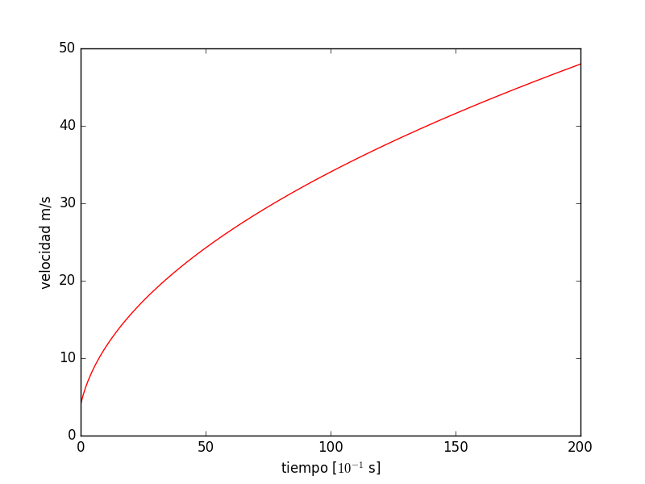
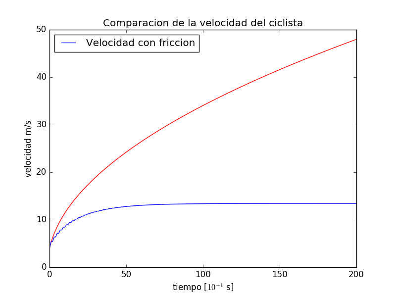

La bicicleta es una forma muy eficiente de transporte, esto la sabe quien se ha subido a una.
El objetivo con este ejercicio es entender los factores que determinan la velocidad máxima de una bicicleta y estimar esta velocidad para un caso realista.
Comenzaremos ignorando la fricción; se tiene que considerar posteriormente, pero primero vamos a entender cómo lidiar con el caso más simple sin fricción.
Partimos con la ecuación de movimiento: con la segunda ley de Newton, que puede escribirse en la forma
Donde $v$ es la velocidad, $m$ es la masa de la combinación bicicleta-ciclista, $t$ es el tiempo y $F$ es la fuerza sobre la bicicleta que viene del esfuerzo del ciclista (aquí asumiremos que la bicicleta se está moviendo en plano terreno).
Manejar debidamente la $F$ es complicado, por la mecánica misma de una bicicleta: ya que la fuerza ejercida por el ciclista se transmite a las ruedas por medio del plato, engranajes, etc.
Esto hace muy difícil obtener una expresión exacta para $F$.
Sin embargo, hay otra manera de atacar este problema que evita la necesidad de conocer la fuerza.
Este enfoque alternativo implica formular el problema en términos de la potencia generada por el conductor.
Los estudios fisiológicos de ciclistas de élite de carreras han demostrado que estos atletas son capaces de producir una potencia de salida de aproximadamente 400 watts durante largos períodos de tiempo (1 h)
Usando ideas de trabajo-energía podemos reescribir la ecuación anterior como
\[\dfrac{d E}{d t} = P \]Donde $E$ es la energía total de la combinación bicicleta-ciclista, y $P$ es la potencia de salida del ciclista.
Esto supone implícitamente que se pierde muy poca energía para la fricción en la propia bicicleta, incluiremos otras fuentes de fricción en un momento.
Para un recorrido plano toda la energía es cinética, entonces
\[ E = m v^{2} \]por tanto
Al sustituir en la ecuación anterior
\[ \dfrac{dv }{d t} = \dfrac{P}{m v}\]Si $P$ es constante, se puede resolver analíticamente.
Reagrupando los términos, tenemos que
donde $v_0$ es la velocidad de la bicicleta al tiempo $t = 0$
Integrando ambas expresiones y resolviendo para $v$, se obtiene
Esta es la solución correcta a la ecuación de movimiento.
Pero vemos que predice que la velocidad aumentará sin límite conforme transcurre el tiempo
¿La solución es congruente con la física del mundo real?
Para poder generalizar nuestro modelo, hay que considerar el efecto de la resistencia del aire.
Un nuevo término se va a agregar a la ecuación de movimiento y por tanto, debemos de resolver numéricamente el problema.
Consideremos la expresión de una diferencia finita de la derivada de la velocidad
Donde hemos supuesto que el intervalo de tiempo $\Delta t$ es pequeño y discreto.
Así mismo, tomamos $v_i$ como la velocidad al tiempo $t_{i} \equiv i \Delta t$, donde $i$ es un valor entero.
Ocupando esta aproximación en la expresión de la derivada de la velocidad, y al hacer un arreglo de los términos:
Esta aproximación nos lleva a una correción que es proporcional a $(\Delta \; t)^2$
Dada la velocidad al tiempo $i$, es decir $v_i$, podemos utilizar la expresión anterior para calcular una aproximación de la velocidad en el tiempo $v_{i+1}$
Por lo que si conocemos la velocidad inicial $v_0$, podemos obtener $v_1$, y a su vez, $v_2$, y así sucesivamente calculamos para estimar la velocidad en tiempos posteriores.
A este método se le conoce como el método de Euler.
Veamos qué información ya tenemos disponible:
¿Qué vamos a calcular?
Necesitamos usar arreglos para almacenar los datos tanto del tiempo y el valor de velocidad
Usamos dos arreglos que inicialmente se encontrarán vacíos:
$t = []$
$v = []$
No olvidemos las condiciones iniciales de nuestro problema:
Suponemos que el ciclista parte con una velocidad inicial de $4 m/s$ al tiempo $t = 0$
Estos valores los almacenamos en los arreglos, para ello ya conocemos la manera de hacerlo
t.append(0)
v.append(4)
Dividimos el intervalo completo de tiempo, en unidades discretas para evaluar la aproximación con el método de Euler
nmax = tmax/dt
Necesitamos iterar en un ciclo para obtener los valores de velocidad a partir de valores anteriores, para ello, usamos un ciclo for, ya que sabemos cuántas veces se debe de repetir el ciclo.
Se requiere el uso de una función matemática que no está dentro del kernel de python, y se llama mediante una sentencia:
from math import sqrt
El código para el ciclo es:
for i in range(int(tmax/dt)):
ti = t[i-1] + dt
vi = sqrt(v[i]**2 + (2 * potencia * dt)/masa)
Una vez que hemos recuperado un conjunto de valores en los arreglos, ahora nos interesa su representación en una gráfica, por lo que vamos a usar las librerías de pyhton que presentan un conjunto de valores en una gráfica.
Hay que llamar la librería:
import matplotlib.pyplot as plt
Código para generar la gráfica
plt.plot(v, "r-")
plt.xlabel("tiempo [$10^{-1}$ s]")
plt.ylabel("velocidad m/s")
plt.show()
El código completo quedaría de la siguiente manera:
import matplotlib.pyplot as plt
from math import sqrt
t = []
v = []
dt = 1
potencia = 400
masa = 70
tmax = 200
nmax = tmax/dt
t.append(0)
v.append(4)
for i in range(int(tmax/dt)):
ti = t[i-1] + dt
vi = sqrt(v[i]**2 + (2 * potencia * dt)/masa)
t.append(ti)
v.append(vi)
plt.plot(v, "r-")
plt.xlabel("tiempo [$10^{-1}$ s]")
plt.ylabel("velocidad m/s")
plt.show()
Obtenemos el siguiente resultado

Pero vemos que no logramos que el modelo sea congruente con la física del mundo real!
Necesitamos incluir algún mecanismo de pérdida de la energía.
Para un ciclista entrenado, la pérdida de energía por fricción en las llantas y en el eje, es mucho menor comparada con la pérdida provocada por la fricción con el aire.
Que a su vez tiene un problema, dada la naturaleza de la combinación de elementos.
La fuerza de resistencia se puede expresar inicialmente como
\[ F_r \simeq - B_1 \; v - B_2 \; v^2 \]
Vemos que se parece a una expansión en series de Taylor.
Para velocidades bajas, el primer término domina y el coeficiente $B_1$ puede calcularse a partir de objetos con formas simples.
Pero para cualquier velocidad razonable, el término $v^2$ domina; pero el valor de $B_2$ no se puede calcular mediante formas simples, y es más complicado para el sistema bicicleta-ciclista.
Si pensamos que un objeto se mueve en la atmósfera, éste debe de empujar el aire frente a él.
La masa de aire desplazado en el tiempo $d t$ es
\[ m_{aire} \sim \rho \: A \: v \ dt \]Donde $\rho$ es la densidad del aire, $A$ es el área frontal del objeto.
Este aire tiene una velocidad $v$, así que su energía cinética es
\[ E_{aire} = m_{aire} \; \frac{v^2}{2} \]Esto debido al trabajo hecho por la fuerza de arrastre (la fuerza en el objeto debida a la resistencia del aire) en el tiempo $dt$
por tanto
\[ F_a \; v \; dt = E_a \]Al juntar todo en una expresión
\[ F_a \simeq - C \; \rho \; A \; v^2 \]$C$ es conocido como el coeficiente de arrastre y podemos tomar el valor de $1/2$
Al incluir esta fuerza de arrastre en la expresión del movimiento, tenemos ahora
\[ v_{i+1} = v_i + \dfrac{P}{m \: v_i} \: \Delta \: t - \dfrac{C \: \rho \: A \: v_i^2}{m} \: \Delta \: t \]Al incluir la expresión en el código, obtenemos
